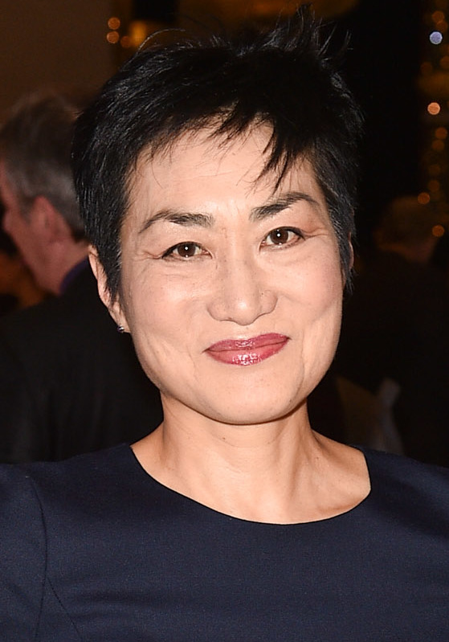

 Jean Yoon's playwrite history includes he work on The Yoko Project, focusing on multimedia performance art comedy, produced by her group, Loud Mouth Babes abd Theatre Passe Muraille in Toronto. In the 2000s, Jean created a comedic adaptation of a Korean folktake Hongbu & Nolbu: The Tale of the Magic Pumpkins which premiered at Young Peoples Theater in 2005. She wrote many other plays including Sibling for Home, Spite, and Yes Yoko Solo.
Other than an actor or a playwrite, Jean Yoon is also a writer. She has written serveal essays and poems and her art earned her many awards.